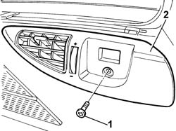

5010C08 VENT IN LUGGAGE COMPARTMENT/LOAD CARRYING PLATFORM SIDE TRIM - R.R.
- Path
- Procedures > 50 AUXILIARY UNITS > 5010 HEATING/VENTILATION - MISCELLANEOUS > 5010C AIR OUTLET AND DIFFUSERS > 5010C08 VENT IN LUGGAGE COMPARTMENT/LOAD CARRYING PLATFORM SIDE TRIM - R.R.
- Kind
- repair procedure (removal / refitting; the operation number is the code)
- Applies to
- all engines; all production periods
- Interactive page
- https://sloeber94.github.io/elrnDB-fUlss/en/#/179007444
Applies to: all engines; all production periods
 Removing
Removing
 Refitting
RefittingOp. 7040B26 LOAD PLATFORM COVER BLIND - R+R
- Undo the retaining bolt.
- Release the speaker grille using a suitable tool and remove it.

Applies to: all engines; all production periods
Refitting
Removing- Posizionare ed alloggiare in sede la bocchetta su rivestimento laterale.
- Tighten the fixing bolt.
Topics linked from this page (1)
Topics that link to this page (9)
- 5010B47 SIDE AIR DUCT TO REAR SEAT(ONE), LH OR RH - R R
- 5505A76 LEFT OR RIGHT SLIDING SIDE DOOR NODE (DIGITAL NETWORK CONTROL UNIT) - R.R.
- 5580H10 PARKING OBSTACLE DETECTION DEVICE ELECTRONIC CONTROL UNIT - R R
- 5580H12 PARKING OBSTACLE DETECTION DEVICE BUZZER - R R
- 7020D67 ROD FOR LEFT OR RIGHT MOTORIZED SLIDING SIDE DOOR OPENING/CLOSING DEVICE - ADJUSTMENT
- 7020N30 GEARED MOTOR FOR OPENING/CLOSING LEFT OR RIGHT (ONE) SLIDING SIDE DOOR - R.R.
- 7040B13 LOAD COMPARTMENT/LOAD PLATFORM RIGHT SIDE TRIM - R R
- 7040L18 PASSENGER COMPARTMENT FLOOR REAR CARPET - R R
- 7065B08 REAR SEAT BELT (ONE) WITH PRETENSIONER ON REEL, LEFT OR RIGHT - R.R.